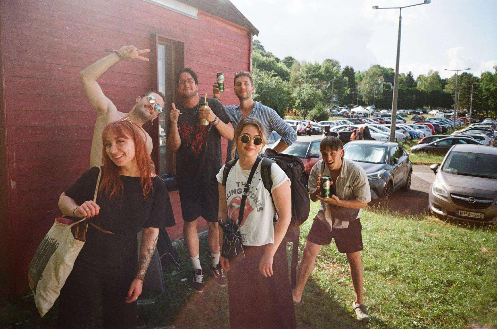

Történetünk
A baráti körünk minden házibulin beizzítja a mikrofont, és az éjbe nyúlva énekel (shout out a jófej szomszédoknak és főbérlőknek). Sok éve jártunk már "0. napozni" Orfűre, mire 2025-ben kiötlöttük, hogy hozhatnánk az erősítőt, és rendezhetnénk karaoke-t a pizzázónál. Az ötlet működött.
A zárónap éjjelén egy stroboszkóppal és külső hangszóróval diszkóztunk a parcellánkon, de eltessékeltek (jogosan) a sátorszomszédaink. Új helynek a legforgalmasabb kereszteződést találtuk az Üllői út végi zuhanyzóknál, amiből az lett, afterpartynkba a hajnali órákig nem engedve minket.
Az ott velünk partyzóknak megígértük, hogy jövőre már eltervezetten megtartjuk ismét a Diszkódiktátor eventünket - abban a pillanatban rácimkézve ezt a nevet.
